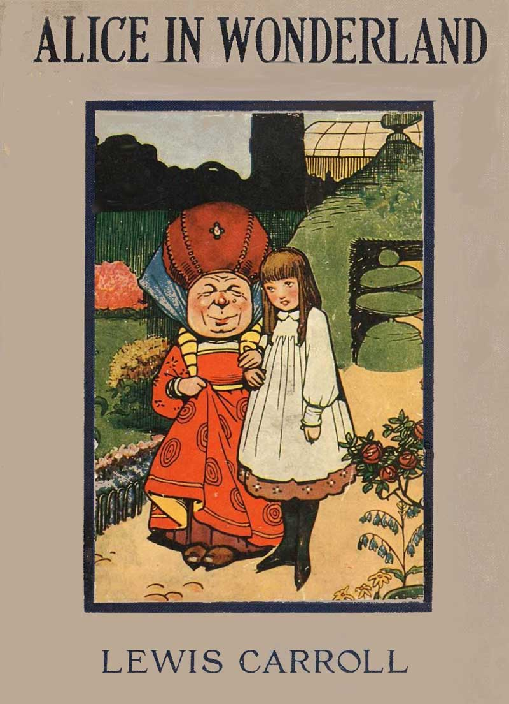

"Why, sometimes I've believed as many as six impossible things before breakfast."
Follow Alice down the rabbit hole and into a world of curious creatures, strange adventures, and unforgettable characters. This e-book contains Chapters 1–3 of the classic story.